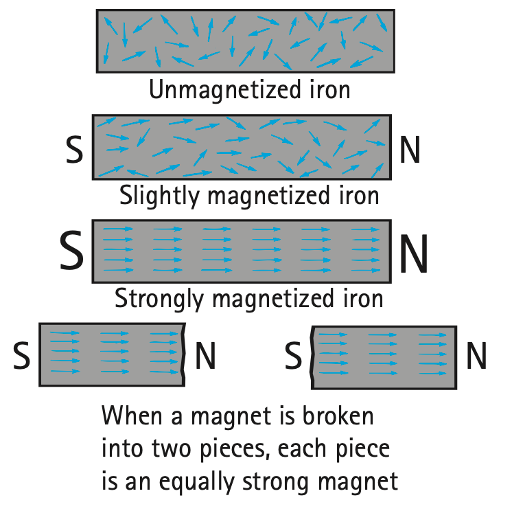

1. Identify the pole types that would appear at the ends of a small bar magnet.
2. Two south poles are brought close together. Predict their interaction.
3. Outside a bar magnet, in what general direction are magnetic-field arrows drawn?
4. What happens to the pole structure when a magnet is divided into several smaller pieces?
5. In an unmagnetized iron sample, how are many magnetic domains typically oriented?
6. Use the domain figure to compare the less-magnetized and more-magnetized samples. What change in domain alignment explains the difference?

7. Two field maps are drawn at the same scale. One has much denser field lines near the magnet. Explain which represents the stronger local field.
8. A compass is placed at three positions around a bar magnet. Describe how its north end should relate to the local field arrow at each position.
9. A bar magnet is cut into four pieces. Predict the number and types of poles on the pieces and explain why the result is not four isolated poles.
10. A soft-iron object becomes magnetic near a strong magnet but loses most of the effect later. Use domains to explain both observations.
11. A company claims it has isolated a permanent north magnetic pole by shaving away the south end of a magnet. Explain what observation would test the claim and what ordinary magnetic behavior predicts.
12. A model shows an iron sample with every domain pointing randomly yet labels it “strong permanent magnet.” Critique the model and describe the change needed to make it physically consistent.
13. Which magnetic interaction rule is correct?
14. A region with wider field-line spacing than a nearby region represents
15. Which statement about cutting a magnet is supported by ordinary observations?
16. In a field diagram around a single bar magnet, the strongest regions are commonly shown
17. What does a magnetic domain represent?
18. A compass is placed where the field arrow points left. The compass north end should tend to point
19. Which model best explains why a soft-iron object may lose much of its magnetism after a nearby magnet is removed?
20. Which claim would be least consistent with ordinary magnet behavior?